library(magrittr)
library(ggplot2)
library(regclass)
library(MASS) Lab 4
Introduction
In this practical, the assumptions of the linear regression model will be discussed. You will practice with checking the different assumptions, and practice with accounting for some of the assumptions with additional steps. Please note that these assumptions can only be checked once you have selected a (final) model, as these assumptions ‘need’ a model that they apply to.
We will use the following packages in this practical:
Data set: Loading & Inspection
For the first part of this practical, a data set from a fish market is used. You can find the dataset in the surfdrive folder. The variables in this fish data set are:
- Species of the fish
- Weight of the fish in grams
- Vertical, length of the fish in cm
- Diagonal length of the fish in cm
- Cross length of the fish in cm
- Height of the fish in cm
- Diagonal width of the fish in cm
Download the dataset from the Surfdrive folder, store it in the folder of your Rproject for this practical and open it in R. Also, adjust the column names according to the code below to make them a bit more intuitive.
# Read in the data set
data_fish <- read.csv("Fish.csv")
colnames(data_fish) <- c("species", "weigth", "vertical_length", "diagonal_length", "cross_length", "height", "diagonal_width")
# Check the data set with the 'head' function to have a general impression.
data_fish %>%
head() species weigth vertical_length diagonal_length cross_length height
1 Bream 242 23.2 25.4 30.0 11.5200
2 Bream 290 24.0 26.3 31.2 12.4800
3 Bream 340 23.9 26.5 31.1 12.3778
4 Bream 363 26.3 29.0 33.5 12.7300
5 Bream 430 26.5 29.0 34.0 12.4440
6 Bream 450 26.8 29.7 34.7 13.6024
diagonal_width
1 4.0200
2 4.3056
3 4.6961
4 4.4555
5 5.1340
6 4.9274Model assumptions
We will now discuss and check the various model assumptions of linear regression. If steps can be taken to account for a violated assumption, this will also be touched upon.
Linearity
With the assumption of linearity, it is assumed that the relation between the dependent and independent variables is (more or less) linear. You can check this by generating a scatterplot using a predictor variable and outcome variable of the regression model.
- Check whether there is a linear relation between the variables vertical length and the cross length.
ggplot(data_fish,
aes(x = vertical_length, y = cross_length)) +
geom_point() +
geom_smooth(se = FALSE) +
ggtitle("linear relation is present") +
xlab("vertical length in cm") +
ylab("cross length in cm")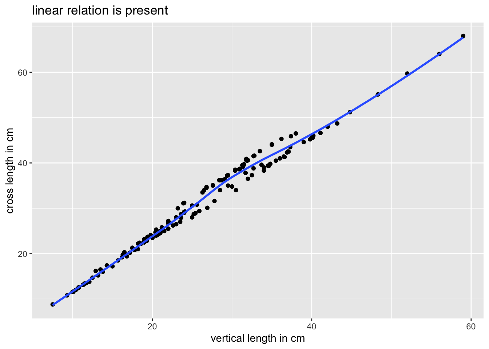
- Next check the relation between weight and height.
ggplot(data_fish, aes(x = weigth, y = height)) +
geom_point() +
geom_smooth(se = FALSE) +
ggtitle("linear relation is missing") +
xlab("Weigth in gram") +
ylab("heigth in cm")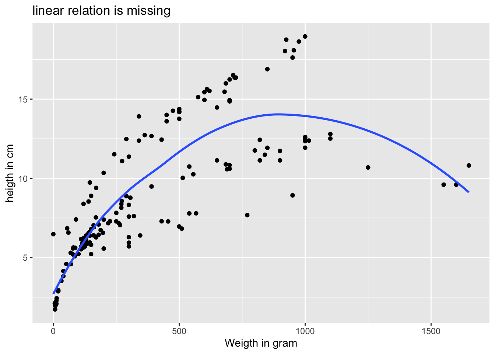
- Describe both plots. What differences do you see?
# The first plot shows a case where there is a more or less linear relation (Vertical length of the fish and cross length of the fish). In the second plot, the relation is clearly not linear.When a non-linear relation is present, you can either choose another model to use, or transform the predictor before adding it to the model, for example using a log-transformation. Applying a transformation, however, will not always solve the problem, and makes interpretation of the model less intuitive.
- Apply a log-transformation to the weight variable.
data_fish$weigth_trans <- data_fish$weigth %>%
log()- Plot the relation between length and weight again, but now including the transformed variable.
ggplot(data_fish, aes(x = weigth_trans, y = height)) +
geom_point() +
geom_smooth(method = "loess", se = FALSE) +
ggtitle("linear relation improved") +
xlab("Weigth in gram") +
ylab("heigth in cm")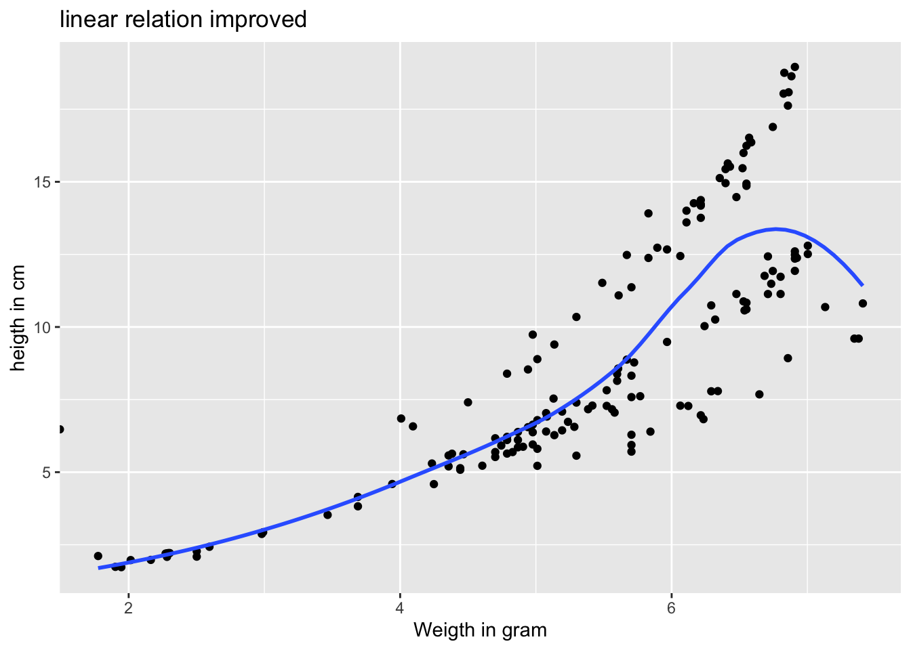
- Describe if the transformation improved the linear relation.
# You see that the relation is still not completely linear, but a lot more linear than before the transformation (plot 2).Predictor matrix full rank
This assumption states that:The first part of this assumption is easy to check: see if the number of observations minus the number of predictors is a positive number. The second part can be checked by either obtaining correlations between the predictors, or by determining the VIF (variance inflation factor). When the VIF is above 10, this indicate high multicollinearity. To account for this, predictors can be excluded from the model, or a new variable can be constructed based on predictors with a high correlation.
To examine VIF scores, the function VIF() from the regclass can be used on a prespecified model. If this model includes a categorical variable with multiple categories, such as ‘species’ in the example data, the generalized VIF is used, and we have to look at the third column (GVIF^*(1/(2*Df))), these values can be compared to normal VIF values.
- Specify a linear model with
weightas outcome variable using all other variables in the dataset as predictors. Save this model asmodel_fish1. Calculate VIF values for this model.
model_fish1 <- lm(weigth ~.,
data = data_fish[,1:7])
model_fish1 %>%
VIF() GVIF Df GVIF^(1/(2*Df))
species 1509.77571 6 1.840388
vertical_length 2360.42508 1 48.584206
diagonal_length 4307.91811 1 65.634732
cross_length 2076.93715 1 45.573426
height 56.20370 1 7.496913
diagonal_width 29.16651 1 5.400602- Check the VIF scores. If VIF scores exceed a score of 10, give substantial explanation why the VIF scores are this high.
# The VIF values in this first model are extreme in some cases, more specifically for the three variables that all measure some aspect of length, it makes sense that these values can be highly correlated. One way to solve this, is excluding predictors that almost measure the same thing as another variable.- What adjustments can be made to the model to account for multicollinearity in this case?
# A straightforward solution is to include only one of the variables measuring an aspect of length. More elaborate solutions exist but are not covered in this course.- Run a new model which only includes one of the three length variables and call it
model_fish2. Describe if there is an improvement.
model_fish2 <- lm(weigth ~ species + diagonal_length + height + diagonal_width,
data = data_fish)
model_fish2 %>%
VIF() GVIF Df GVIF^(1/(2*Df))
species 218.36805 6 1.566507
diagonal_length 28.17950 1 5.308437
height 54.91084 1 7.410185
diagonal_width 28.52222 1 5.340620# We chose to go with a model which only includes `diagonal_length`, as this variable had the highest VIF value and therefore is able to best grasp the variance that is also measured by the other two length variables. However which strategy is most appropriate can differ per situation. We see now that the VIF values have returned to 'normal' values (although still a bit high).- What happens with the regression model when there are more predictors than observations?
# If there are more predictors than observations, the model can not be identified and the parameters cannot be estimatedExogenous predictors
For this assumption, the expected value of the errors (mean of the errors) must be 0. Furthermore, The errors must be independent of the predictors.
- What is the possible consequence of not meeting this assumption?
# Not meeting this assumption results in biased estimates for the regression coefficients.Constant, finite error variance
This assumptions is also called ‘the assumption of homoscedasticity’. It states that the variance of the error terms should be constant over all levels of the predictors. This can be checked by plotting the residuals against the fitted values. These plots can be obtained by simply taking the first plot of a specified model, plot(model_x).
- Create a residual vs fitted values plot for
model_fish1, which is the first plot generated by theplot()function.
model_fish1 %>%
plot(1)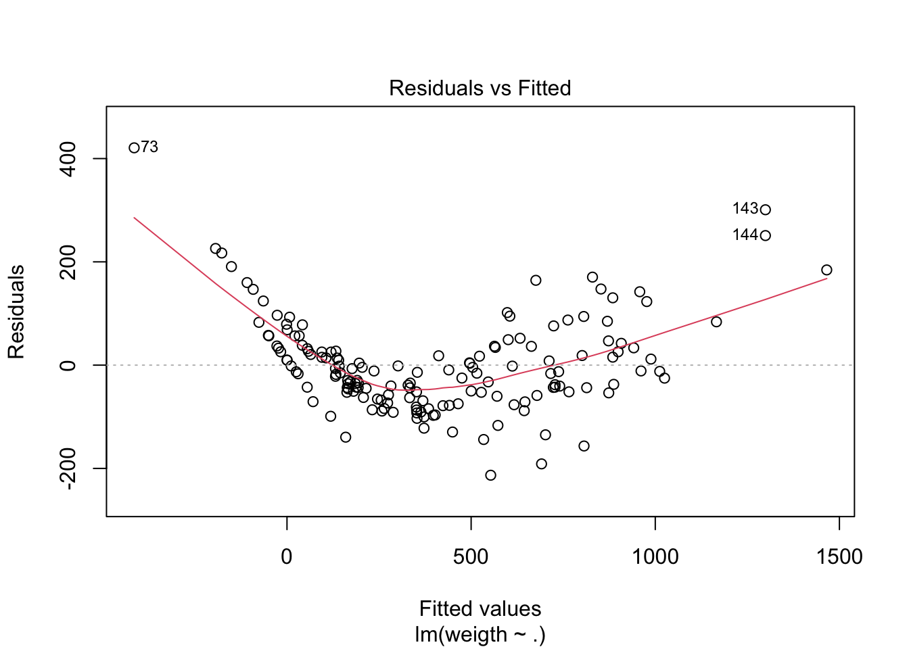
- Load in the
irisdata, and specify a model where sepal length is predicted by all other variables and save this asmodel_iris1.
data_iris <- iris
model_iris1 <- lm(Sepal.Length ~ .,
data = data_iris)- Create a residual vs fitted plot for this model as well.
model_iris1 %>%
plot(1)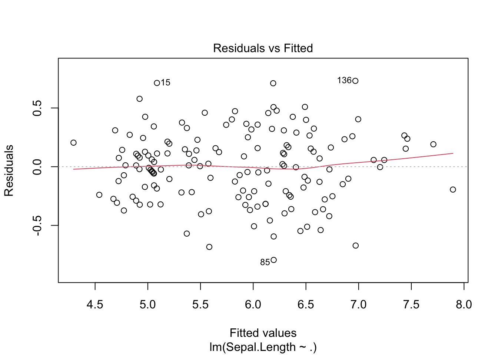
- Discuss both plots and indicate whether the assumption is met.
# In the `iris_data` plot, it can be seen that the red line is quite constant. Also, the dots seem to have a rather constant variance. In the `fish_data` plot, however, the variance in error terms seems smaller for the lower values than for the higher values. This second plot indicates heteroscedasticity and indicates that the assumption is violated.- Discuss what the consequence would be if this assumption is violated.
# If this assumption is violated, estimated standard errors are biased.Independent errors
This assumption states that error terms should have no correlation. Dependence of the errors can result from multiple things. First, there is a possible dependence in the error terms when there is serial dependence, for example because the data contains variables that are measured over time. Another reason can be when there is a cluster structure in the data, for example students in classes in schools.
- How can both causes of correlated error terms be detected, and what can be done to solve the problem?
# Temporal dependence can be checked by investigating the autocorrelation, while clustered data can be found by investigating the intra class correlation (ICC).
# More important: dealing with these dependencies requires another model (multilevel for clustered data, or a model that account for the time aspect). Those models are out of the scope of this course, but always be aware of a theoretical dependency between your errors.Normally distributed errors
This assumption states that errors should be roughly normally distributed. Like the assumption of homoscedasticity, this can be checked by model plots, provided by R.
- Create a QQ plot for
model_iris1, which is the second plot generated by theplot()function. Indicate whether the assumption is met.
model_iris1 %>%
plot(2)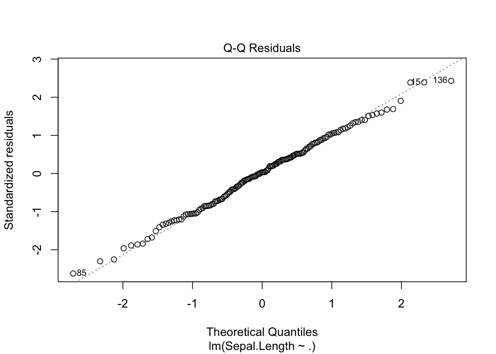
- Create a new model using the fish data, where
diagonal_widthis predicted bycross_length, and store the model asmodel_fish3.
model_fish3 <- lm(diagonal_width ~ cross_length,
data = data_fish)- Create a QQ plot for
model_fish3.
model_fish3 %>%
plot(2)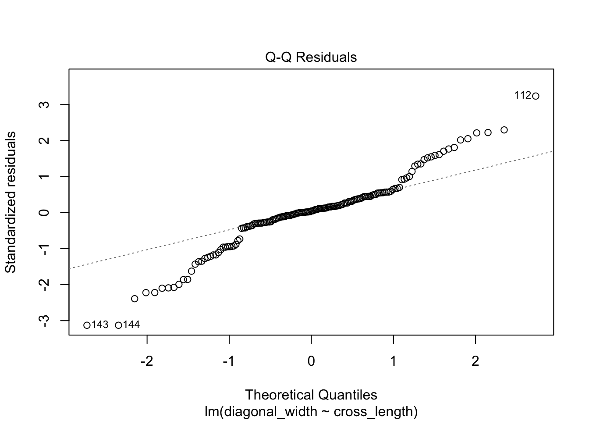
- Interpret the two plots. Is the assumption met in both cases?
# In the two plots above, QQ plots are provided for the 2 models. For the first model, the error terms follow the ideal line pretty well, and the assumption holds. In the second plot, the tails deviate quite a lot from the intended line, and it can be debated that the assumption is violated.- In what cases is it problematic that the assumption is not met? And in what cases is it no problem?
# The assumption is important in smaller samples (n < 30). In bigger samples, violating the assumption is less of a big problem. For prediction intervals however, normality of errors is always wanted.Influential observations
Outliers
Outliers are observations that show extreme outcomes compared to the other data, or observations with outcome values that fit the model very badly. Outliers can be detected by inspecting the externally studentized residuals.
- Make a plot of studentized residuals by using the functions
rstudentandplotfor `model_fish1. What do you conclude?
model_fish1 %>%
rstudent() %>%
plot()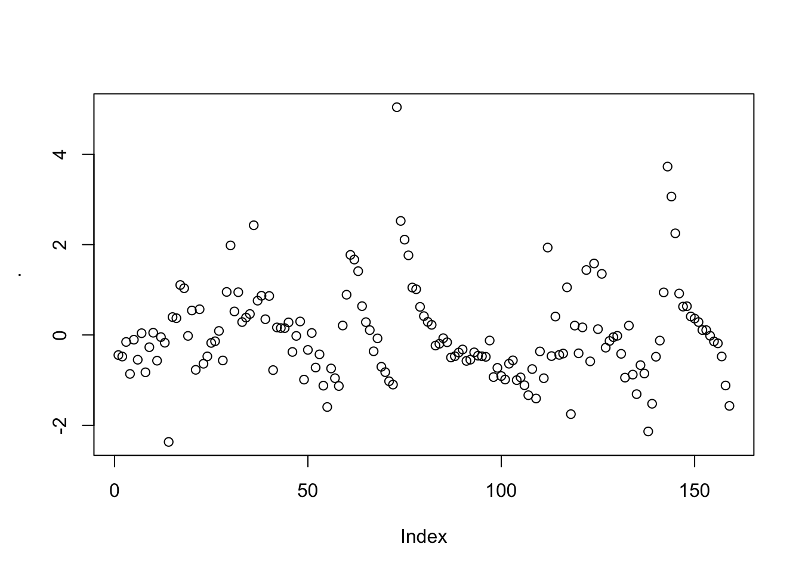
# There is at least one clear outlier around observation number 70.- Make a plot of studentized residuals for
model_iris1.
model_iris1 %>%
rstudent() %>%
plot()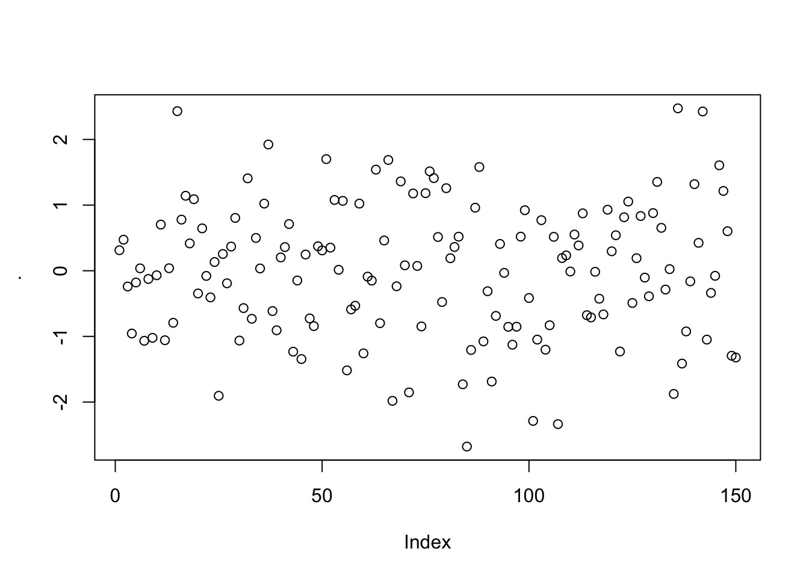
- Store the dataset
Animalsfrom theMASSpackage. Define a regression model where animals’ body weight is predicted by brain weight and store it asmodel_animals1.
data_animals <- Animals
model_animals1 <- lm(body ~ brain,
data = data_animals)
# There are not really any clear outliers to worry about.- Make a plot of the studentized residuals for
model_animals1.
model_animals1 %>%
rstudent() %>%
plot()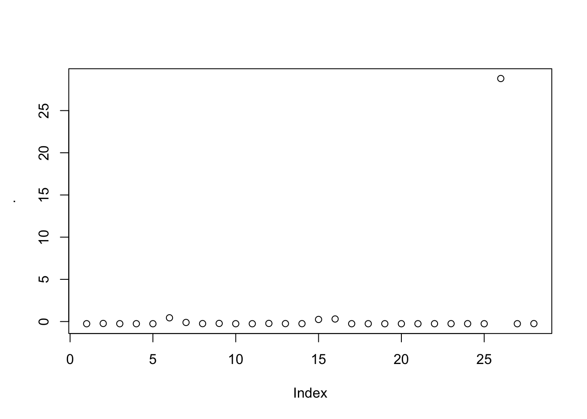
# Observation number 26 is an extreme outlier.High-leverage observations
High-leverage observations are observations with extreme predictor values. To detect these observations, we look at their leverage values. These values can be summarized in a leverage plot.
- For the model specified under model_animals1, create a leverage plot by plotting the
hatvalues()of the model.
model_animals1 %>%
hatvalues() %>%
plot()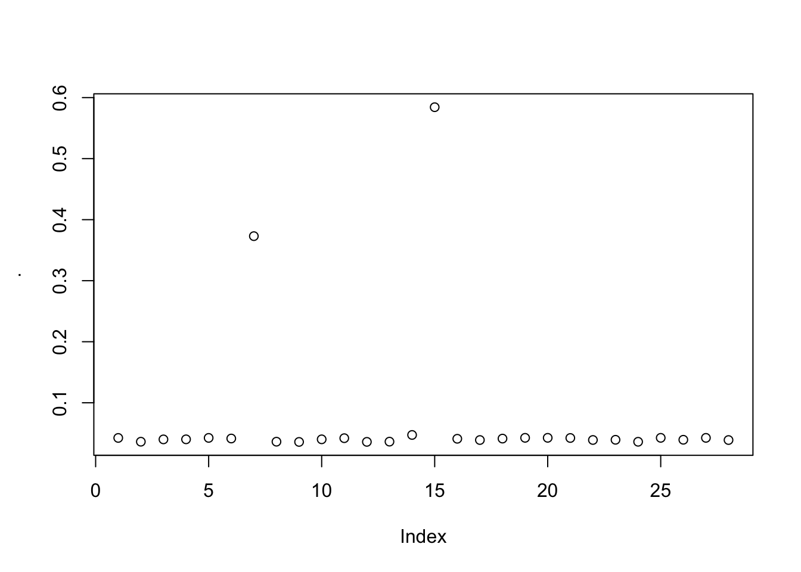
# In the leverage plot, observation 7 and 15 stand out from the other observations. When you look at the data set, you can notice that both of these observations are elephant species.
# A case with high leverage is not necessarily bad: the influence on the model is more important.Influence on the model
Both outliers and observations with high leverage are not necessarily a problem. Cases that are both, however, seem to form more of a problem. These cases can influence the model heavily and can therefore be problematic.
Influence measures come in two sorts: Cook’s distance checks for influential observations, while DFBETAS check for influential, and possible problematic, observations per regression coefficients.
- For
model_animals1, check Cooks distance by plotting thecooks.distanceof the model.
model_animals1 %>%
cooks.distance() %>%
plot()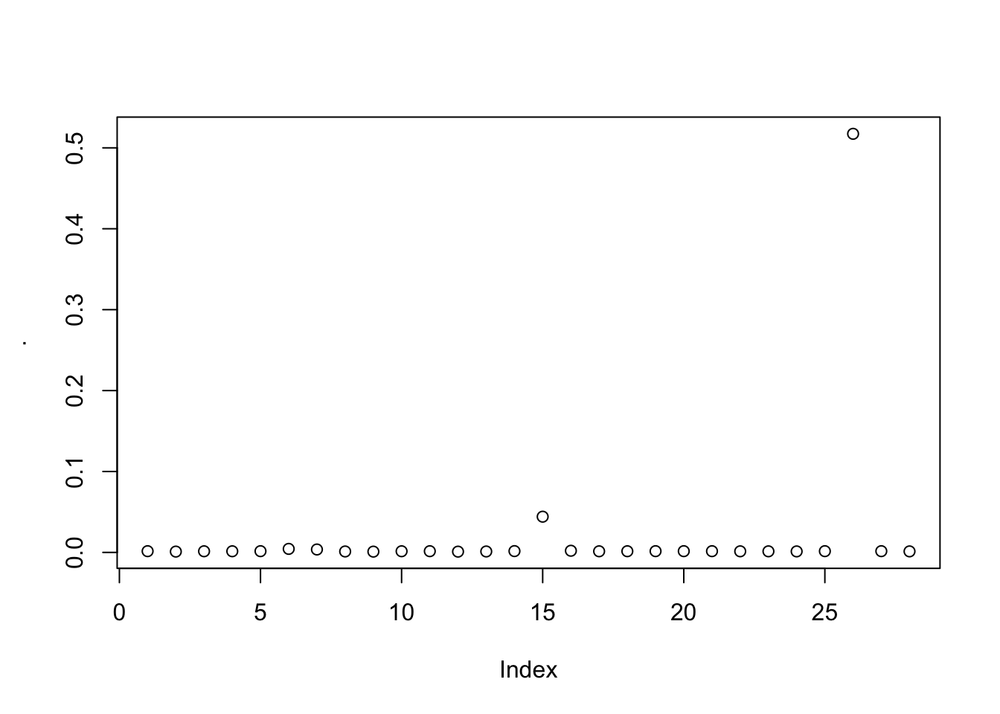
- For
model_animals1, check the DFBETAS by using the functiondfbetas.
plot(dfbetas(model_animals1)[,1],
main = "intercept")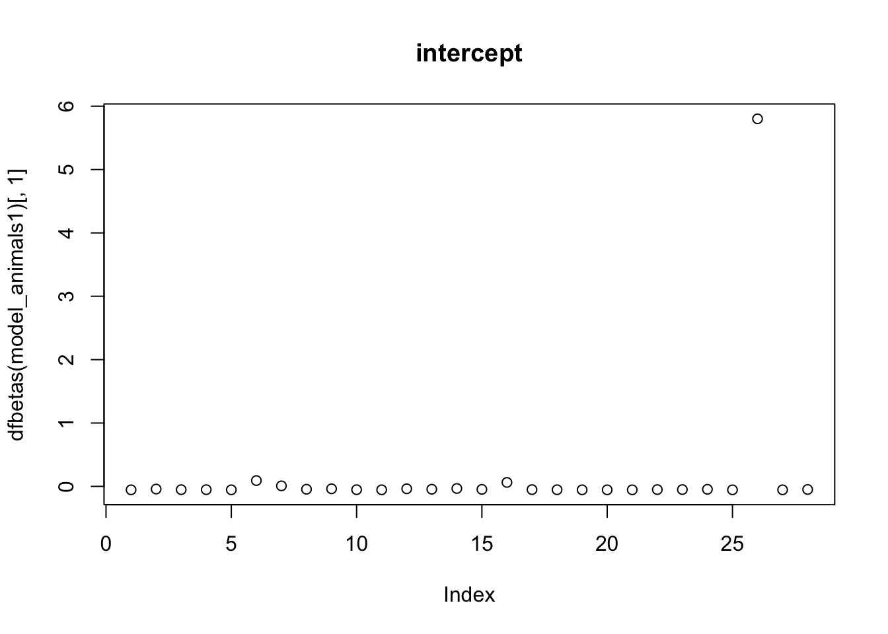
plot(dfbetas(model_animals1)[,2],
main = "slope")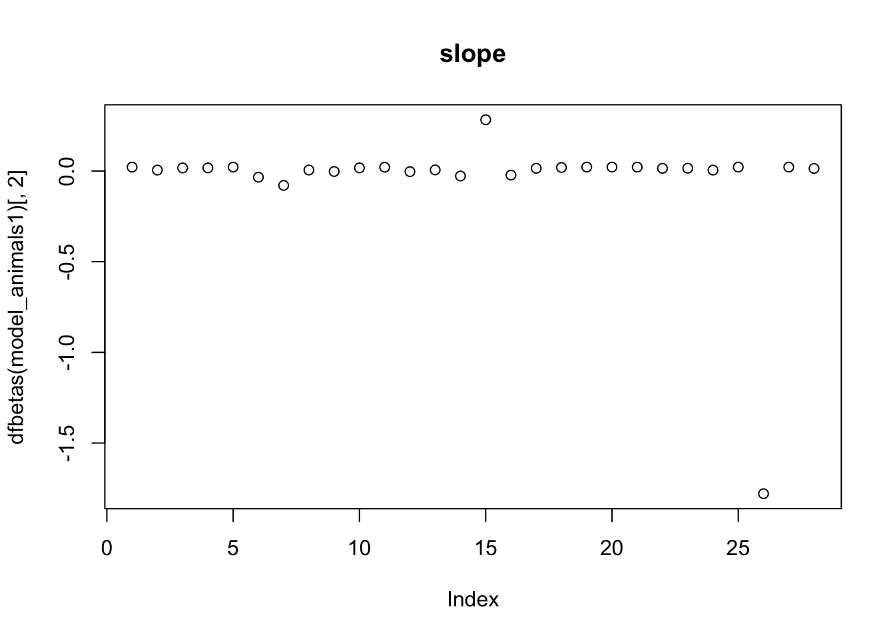
# Note that because of the structure of the output of `dfbetas` it is not very convenient to process it using a pipe structure.- Describe what you see in the plots for Cook’s distance and DFBETAS. What do you conclude?
# Case 26, the earlier spotted outlier, has in all three plots an outstanding value. There is reason to assume that this observation is problematic.- Delete the problematic observation that you found in Question 12 and store the dataset under a new name.
data_animals2 <- data_animals[-26,]- Fit the regression model where animals’ body weight is predicted by brain weight using the adjusted dataset and store it as
model_animals2.
model_animals2 <- lm(body ~ brain,
data = data_animals2)- Compare the output to
model_animals1and describe the changes.
summary(model_animals1)
Call:
lm(formula = body ~ brain, data = data_animals)
Residuals:
Min 1Q Median 3Q Max
-4316 -4312 -4242 -3806 82694
Coefficients:
Estimate Std. Error t value Pr(>|t|)
(Intercept) 4316.32258 3465.24131 1.246 0.224
brain -0.06594 2.42114 -0.027 0.978
Residual standard error: 16790 on 26 degrees of freedom
Multiple R-squared: 2.853e-05, Adjusted R-squared: -0.03843
F-statistic: 0.0007417 on 1 and 26 DF, p-value: 0.9785summary(model_animals2)
Call:
lm(formula = body ~ brain, data = data_animals2)
Residuals:
Min 1Q Median 3Q Max
-1653.1 -876.8 -814.4 -778.9 10855.6
Coefficients:
Estimate Std. Error t value Pr(>|t|)
(Intercept) 810.1594 616.6065 1.314 0.201
brain 0.6855 0.4231 1.620 0.118
Residual standard error: 2930 on 25 degrees of freedom
Multiple R-squared: 0.09501, Adjusted R-squared: 0.05881
F-statistic: 2.625 on 1 and 25 DF, p-value: 0.1178# We see that the model changes quite a bit: the intercept becomes much lower, and the slope even changes direction (negative to positive).- Run the plots for influential observations again on this new model and see if anything changes.
model_animals2 %>%
cooks.distance() %>%
plot()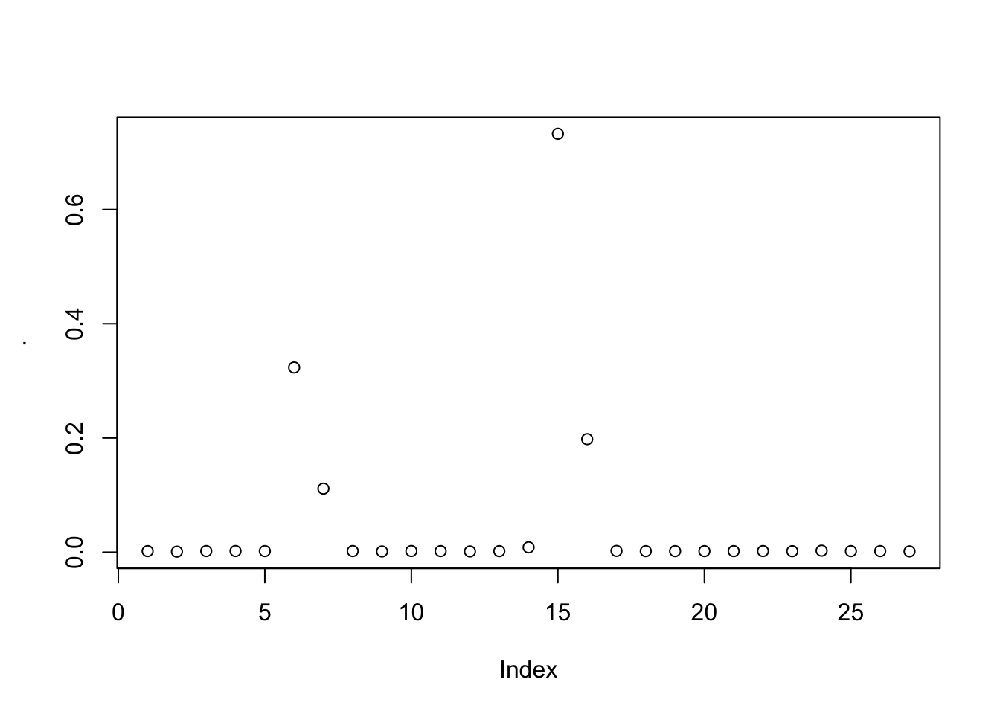
plot(dfbetas(model_animals2)[,1],
main = "intercept")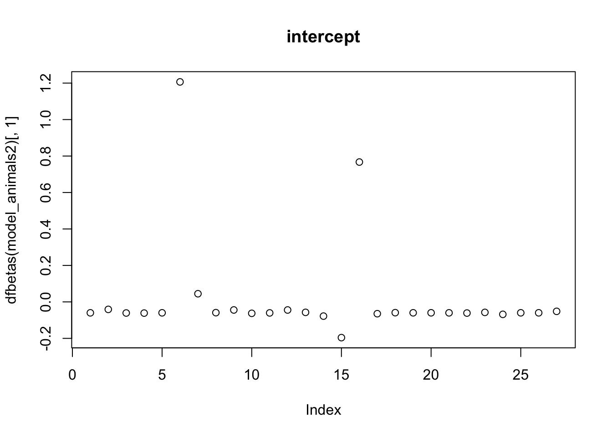
plot(dfbetas(model_animals2)[,2],
main = "slope")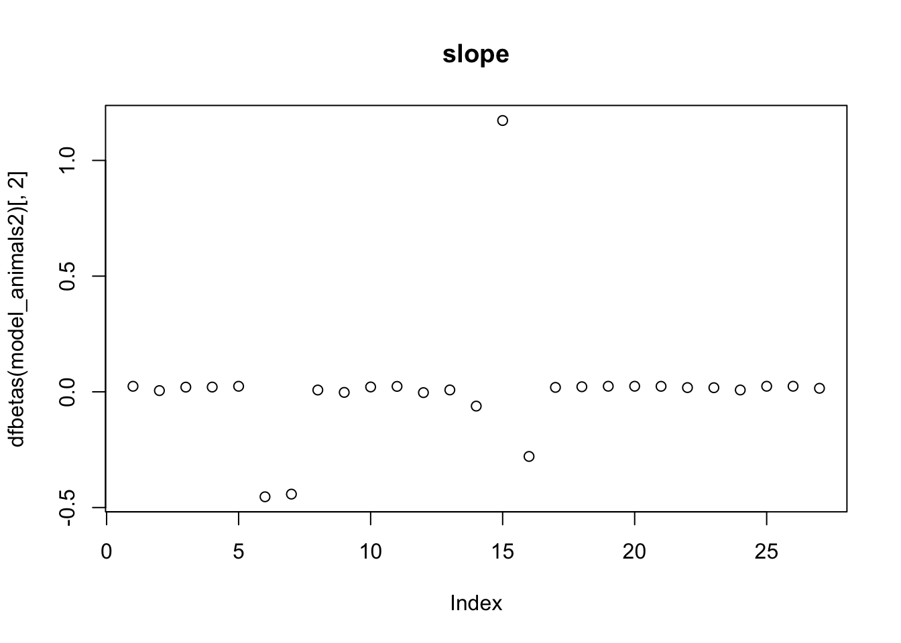
# We see that new influential observations arise. These were earlier overshadowed by observation 26. If you look at these cases, you see these are the cases with very heavy animals. In this case the solution should be to transform the data and take the log of the weights, instead of these values. This means that the assumption of linearity was probably not met for this data set.*